library(ggplot2)Tutorial 3
Coordinate Systems
The meaning of position aesthetics and how they produce a 2D position on the plot depend on the coordinate system. This is also responsible for drawing the axes and panel backgrounds (grid lines, etc.). As with scales, Cartesian coordinates are applied by default unless stated otherwise, which preserves the common meaning of x and y.
Cartesian coordinates
Most of the plots we know and love use Cartesian coordinates, where the position of an element is given by orthogonal distances, x and y, to an origin.
ggplot(mpg) +
aes(displ, hwy) +
geom_point(aes(color=class))
Even when one of the axis is a categorical variable, the same concept of “distance to an origin” applies, because internally those categories are mapped to positions 1, 2, 3…
ggplot(mpg) +
aes(displ, class) +
geom_col() +
geom_text(aes(label=class), data.frame(
displ = 200, class = c(1, 2, 3, 4, 5, 6, 7)
))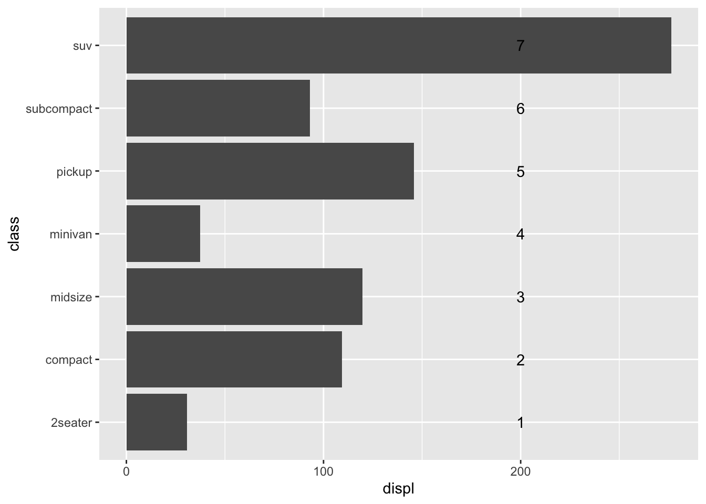
As with scales, coord_cartesian() is the default, and it does not need to be explicitly specified to produce a plot. However, this function has some useful options that makes some things easier. Particularly, you may recall from the previous tutorial that zooming in by setting the limits of a scale by default censors points that are out of bounds (meaning that they are marked as missing with a NA). For scales, an additional argument oob must be specified in order to keep those points (e.g. for smoothing calculations). In contrast, coord_cartesian() provides limits that do not censor data. Therefore, the following plots are equivalent:
p <- ggplot(mpg) +
aes(displ, hwy) +
geom_point(aes(color=class)) +
geom_smooth()
p +
scale_x_continuous(limits=c(3, 4), oob=scales::oob_keep) +
scale_y_continuous(limits=c(20, 30), oob=scales::oob_keep)`geom_smooth()` using method = 'loess' and formula = 'y ~ x'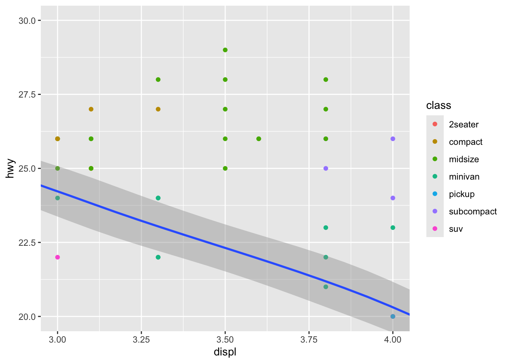
p +
coord_cartesian(xlim=c(3, 4), ylim=c(20, 30))`geom_smooth()` using method = 'loess' and formula = 'y ~ x'
Checkpoint
- Function
coord_flip()comes in handy to exchange thexandyaxes. Take the first example and addgeom_smooth(method="lm"). What is the difference between addingcoord_flip()and directly exchanging thexandymapping in theaes()? Why?
# displ ~ hwy
p <- ggplot(mpg) +
aes(displ, hwy) +
geom_point(aes(color=class)) +
geom_smooth(method="lm")
p + coord_flip()`geom_smooth()` using formula = 'y ~ x'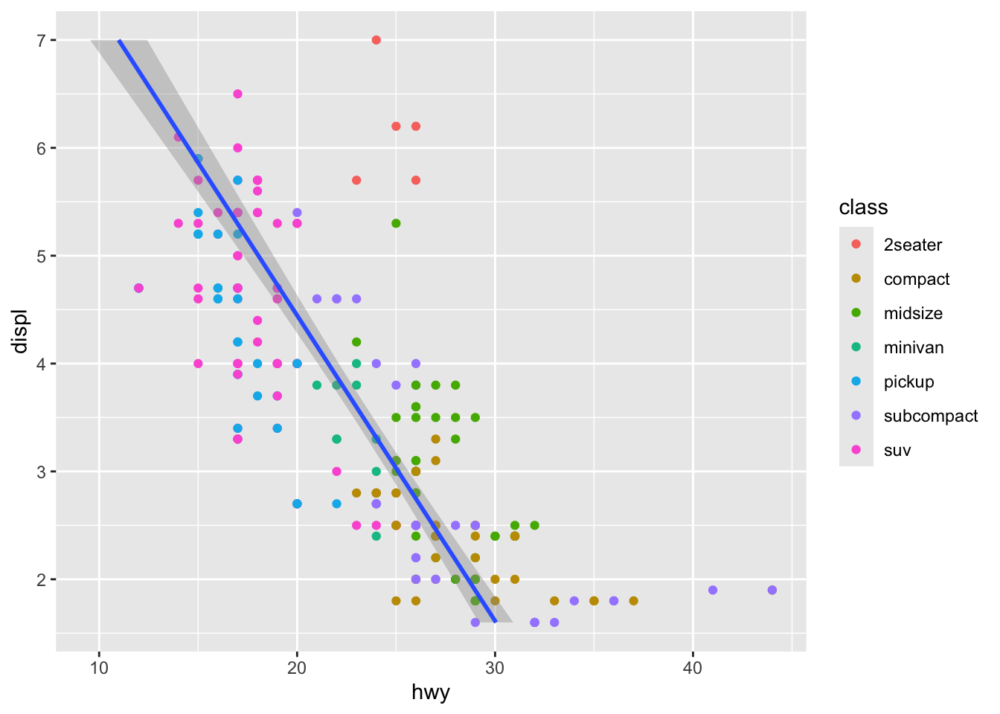
# hwy ~ displ
ggplot(mpg) +
aes(hwy, displ) +
geom_point(aes(color=class)) +
geom_smooth(method="lm")`geom_smooth()` using formula = 'y ~ x'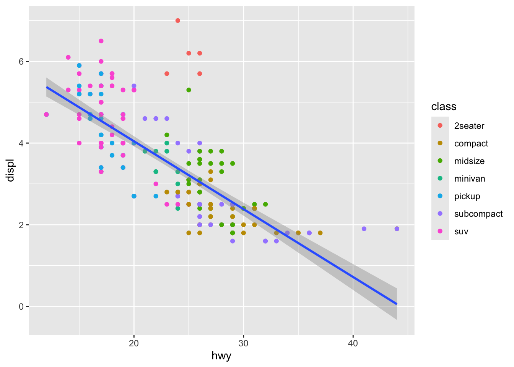
Second one is displ as a function of hwy, first one is hwy as a function of displ
Recommend to never use coord_flip()
- Take the first example and add
coord_fixed(). Then use variablectyinstead ofdisplto compare. What does this function do? What could be a good use case for this?
ggplot(mpg) +
aes(hwy, displ) +
geom_point(aes(color=class)) +
coord_fixed()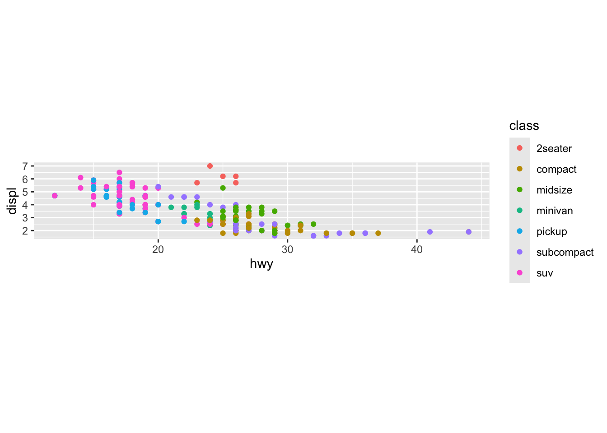
Gives both x and y axis same size (i.e. 5 points on y is the same size as 5 points on x).
Might make little sense in this type of plot, but makes sense with cty because they are both in Miles Per Gallon. If the units are the same, it makes sense to fix them.
ggplot(mpg) +
aes(hwy, cty) +
geom_point(aes(color=class)) +
coord_fixed()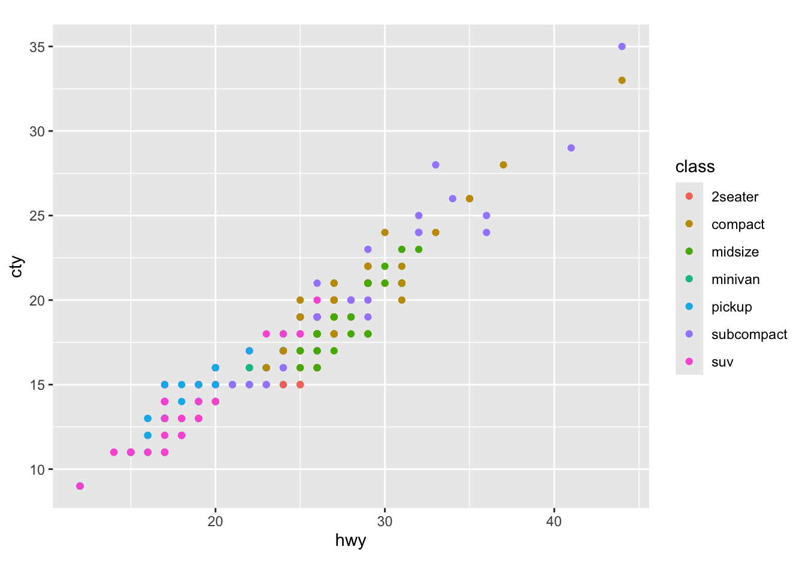
How to make a pie
A pie chart is just a single stacked bar in polar coordinates. For instance, take this one:
p <- ggplot(mpg) +
aes("cars", fill=class) +
geom_bar()Then, we just need to fold it using y (the count produced by geom_bar) as the angle:
p + coord_polar(theta="y") + theme_void()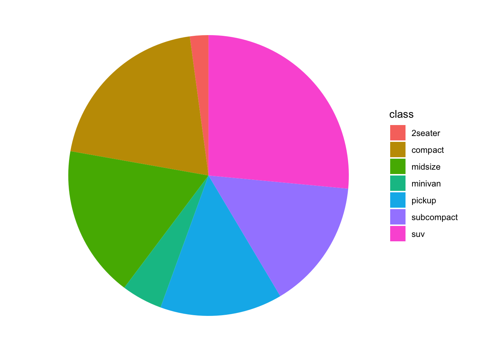
So much effort for such a meaningless visualization. :)
Theta is the angle of the chart, showing it varies with y. Add a theme (or remove it with theme_void().
p + coord_polar(theta="y", start = 45, direction = -1) + theme_void()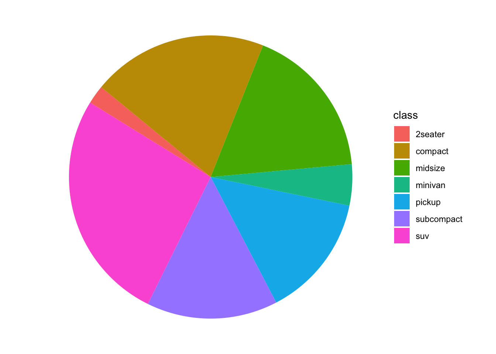
start changes angle at which the chart starts. direction determines clockwise or counterclockwise.
p +
coord_cartesian(xlim=c(3, 4), ylim=c(20, 30), clip = "off")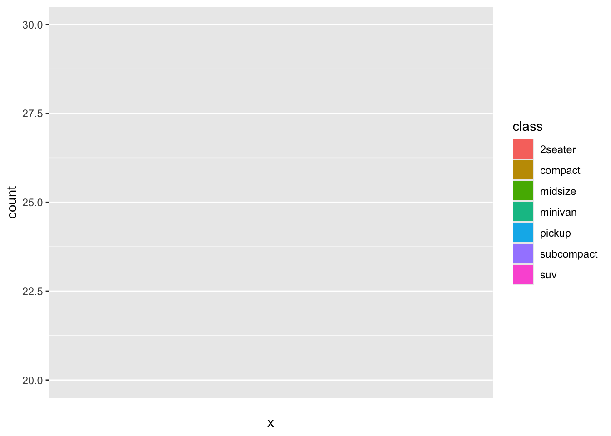
p +
coord_cartesian(xlim=c(3, 4), ylim=c(20, 30), clip="off") +
annotate("text", x=2.95, y=29, label="some\ntext")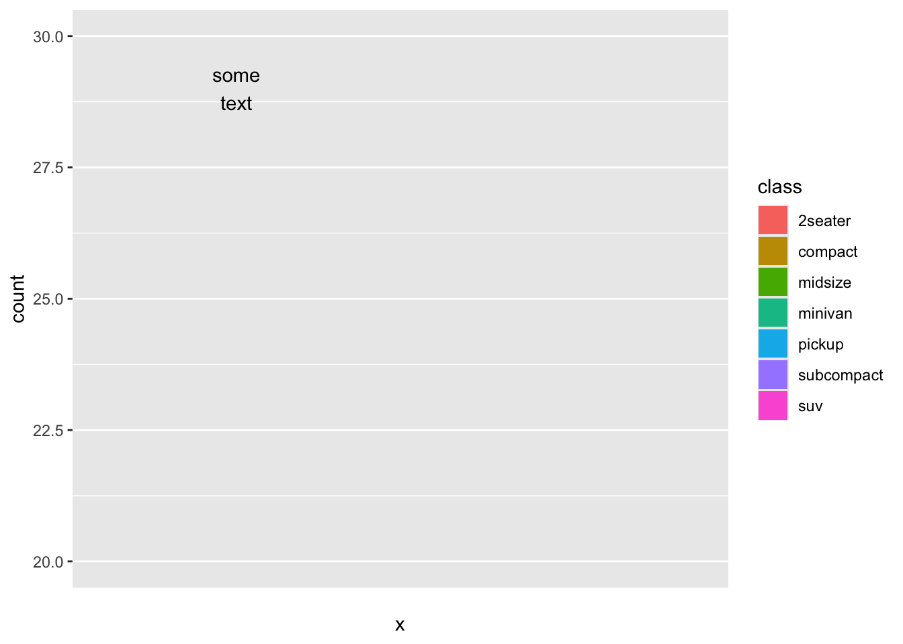
Transformations
Transformations can be performed at two levels: at the scale level, via the trans argument to the scale functions (or the dedicated scales such as scale_x_log10()), or at the coordinate system level, via coord_trans(). The only difference is that the first ones occur before any statistics are computed, while the second ones occur after those.
Checkpoint
- Take the first example and add
geom_smooth(method="lm"). What is the difference between addingscale_x_log10()and addingcoord_trans(x="log10")? Why?
p <- ggplot(mpg) +
aes(displ, hwy) +
geom_point(aes(color=class)) +
geom_smooth(method="lm")
p + scale_x_log10()`geom_smooth()` using formula = 'y ~ x'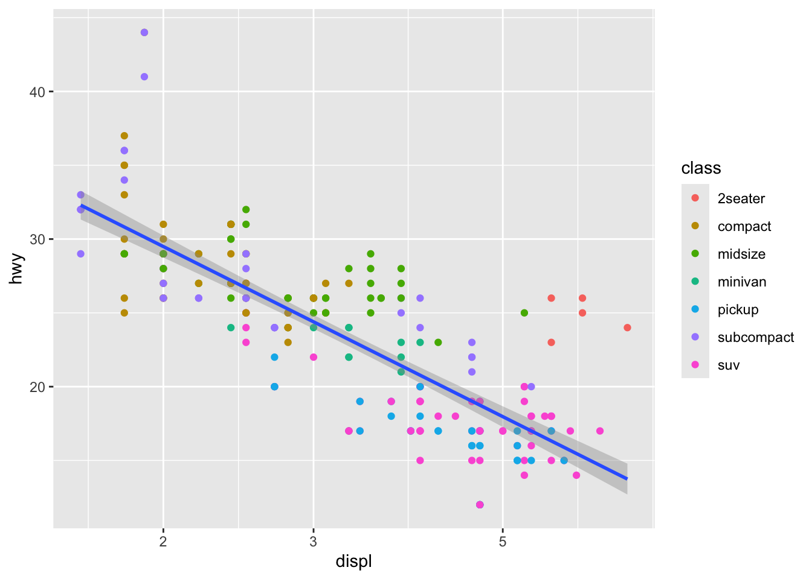
p + coord_trans(x="log10")Warning: `coord_trans()` was deprecated in ggplot2 4.0.0.
ℹ Please use `coord_transform()` instead.`geom_smooth()` using formula = 'y ~ x'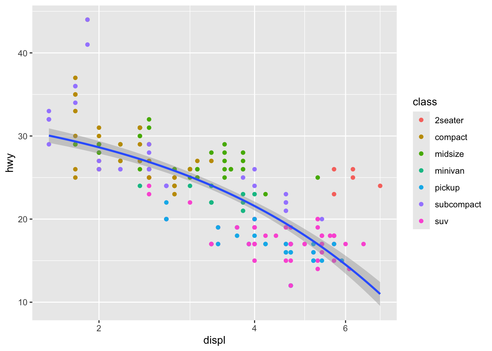
The first one we are transforming the scales before applying any line to the data. The second adds the line and then squeezes the data.
Maps
Finally, an important family of coordinate systems are map projections. Enter the fascinating world of how to map a sphere to a plane.
p <- ggplot(map_data("world")) +
aes(long, lat, group=group) +
geom_path()
p # No projection specified, simply long, lat as x, y
p + coord_map(xlim=c(-180, 180)) # Mercator projection by default
p + coord_map("orthographic", xlim=c(-180, 180))
p + coord_map("sinusoidal", xlim=c(-180, 180))This is the old way of doing things. 10-15 years old. It was very complicated.
See ?mapproj::mapproject for more info about projections.
Checkpoint
- Click “Zoom” in the plot panel for each of the four plots proposed above. What happens if you stretch and shrink the width of the plot panel in each case? Why?
There were also no fixed coordinates. The maps were x and y coordinates. So as you move the map and scale, the map adjusts and distorts. Coord_map() allows you to fix the coordinates, but you have to specify them yourself.
install.packages("giscoR")This is a package that gets maps in a set format.
library(giscoR)
map <-
gisco_get_countries()
ggplot(map) +
geom_sf()
This is a better way to do maps. It will scale to fix the coordinates.